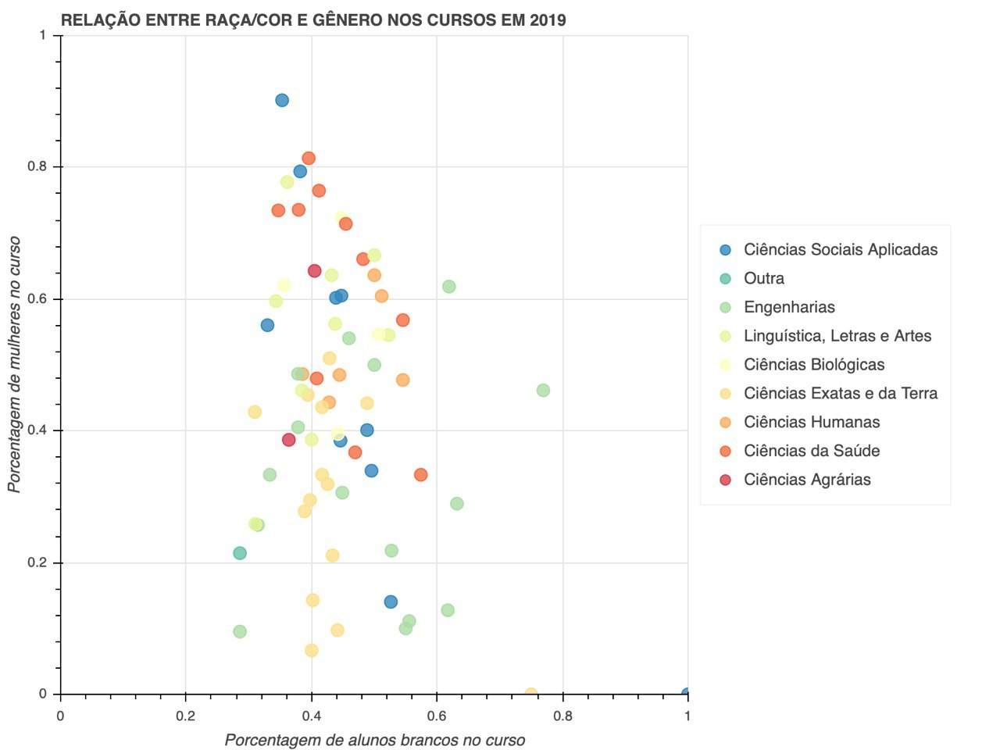
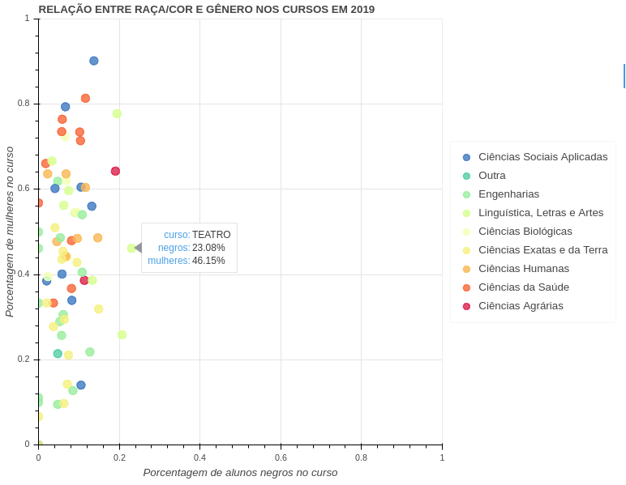
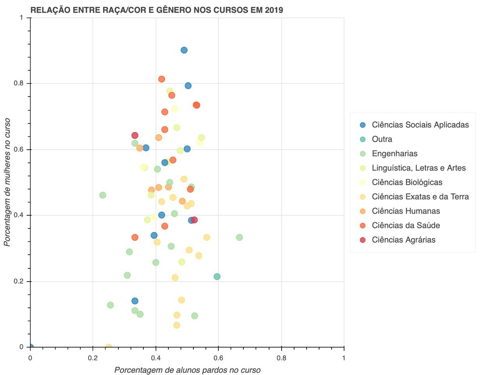
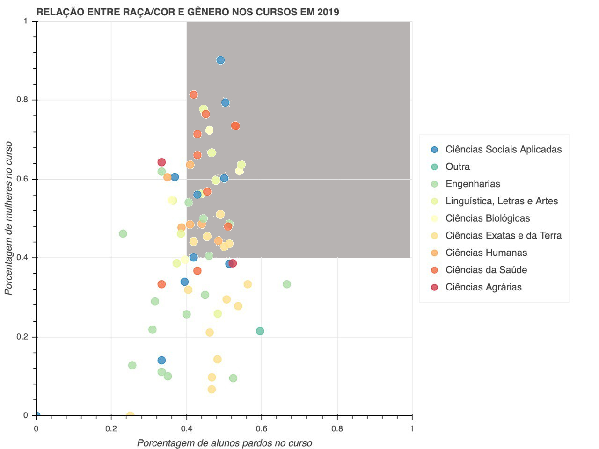
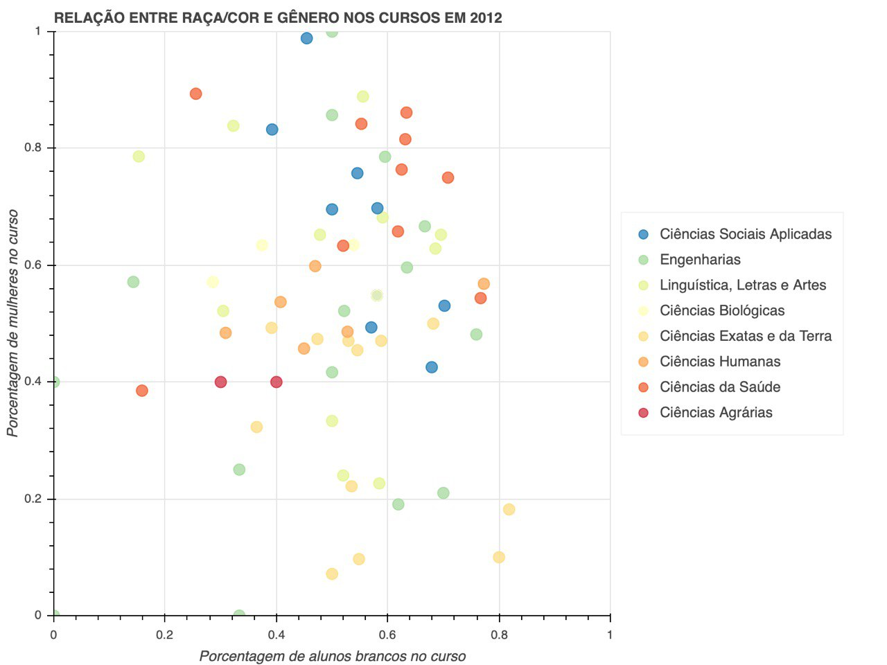
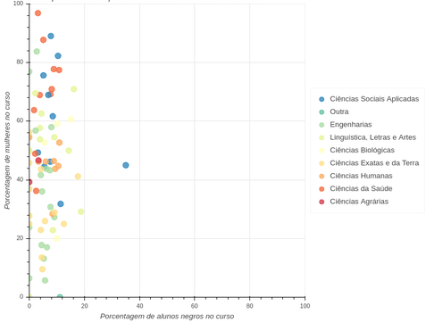
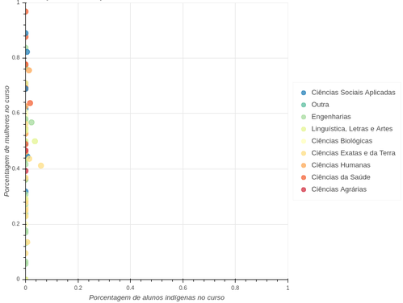

Baseando-se em uma reportagem do Nexo Jornal que analisou a distribuição de gênero e raça de estudantes do ensino superior no Brasil, realizada com os dados de 2016 do INEP, foi feito um estudo local utilizando dados abertos da UFRN.
Uma parte da análise resume-se a identificar os padrões de estudantes com base nas áreas de conhecimento. Uma das bases usadas é a de discentes, que contém os dados do status (ativo, concluído, trancado) do curso do estudante, id do curso em que ele está matriculado, a matricula, a raça e o sexo.
O outro dataset é o de cursos, que contém o nome do curso, a modalidade (graduação, doutorado, técnico) e a área de conhecimento na qual o curso se encaixa.
Para visualizar os gráficos interativos, acesse este link. Lá, ao passar o mouse por cada ponto é possível visualizar o nome do curso, bem como a taxa de alunas mulheres e de alunos da raça determinada no gráfico. Também é possível usar o slider para mudar o ano analisado.
Os demais estudos podem ser encontrados no repositório.
Como está a UFRN hoje?
O primeiro passo foi conferir o cenário atual (2019), com foco em ver quais áreas possuem maior proporção de alunas e de alunos de diferentes raças, além de atentar-se também a essas informações em relação ao curso de Tecnologia da Informação (BTI).
No que diz respeito à presença feminina, os cursos de ciências da saúde e ciências sociais aplicadas são os que possuem mais de metade dos matriculados do sexo feminino. Desses, o que se encontra no topo é Serviço Social, tendo mulheres compondo 90% do total de estudantes.
No curso de tecnologia da Informação, 9.74% dos alunos ingressantes eram mulheres.
Como esperado, boa parte dos cursos de engenharia e de ciências exatas possuem menos de 50% de ingressantes do sexo feminino, o que pode ser constatado ao observar os pontos verde-claros e amarelos na metade inferior do gráfico abaixo:

Além disso, boa parte dos cursos que possuem mais de 50% de alunos brancos (metade direita do gráfico) também são da área de engenharias.
Em relação aos estudantes negros, o curso em que eles possuem a presença mais significativa é Teatro, onde foram 23% dos ingressantes. Em seguida, Música e Dança, respectivamente, foram os que mais receberam alunos negros em 2019. Também é interessante notar que esses cursos, bem como a maioria dos que tem apresentam uma presença de ingressantes negro superior a 10%, também possuem mais de 40% de mulheres.
No BTI, estudantes negros foram 6.3% dos matriculados neste ano.

Ao analisar os ingressantes de 2019 que se declaram como pardos, vemos que, dos (poucos) cursos nos quais esses alunos são pelo menos 50%, uma parte considerável são das áreas de ciências sociais aplicadas e ciências exatas e da terra.

Uma observação interessante é a de que boa parte dos cursos nos quais ao menos 40% dos ingressantes eram mulheres também é vista uma presença considerável de pessoas de raças diferentes da branca. A relação onde essa percepção é mais evidente é a que compara a porcentagem de mulheres com a de alunos pardos, sendo ciências da saúde, ciências humanas e ciências sociais aplicadas as áreas onde esse comportamento é mais facilmente encontrado. Essa interseção de informações foi destacada na área cinza do gráfico abaixo:

O que mudou?
Em 2012, pelos menos 40% dos alunos ingressante de muitos cursos se declaravam brancos. E isso acontecia em todas as áres de conhecimento, com exceção de ciências agrárias. Além disso, as alunas mulheres eram menos de um terço basicamente em algumas engenharias e cursos de ciências exatas e da terra. Em todos os cursos de exatas, mulheres são menos de 50% dos alunos matriculados.

Já em 2016, pouco cursos possuíam mais de 40% de alunos brancos sendo matriculados, o que é bem contrastante com a situação de 2012. O que não supreende, porém, é que nesse grupo seleto os cursos de engenharia e ciências exatas se mostram mais presentes, comparando a outras áreas. O cenário em que engenharia e exatas são as áreas onde a proporção de mulheres é menor também não mudou muito, levando-se em consideração que neste momento possuem ainda menos alunas.

No ano de 2019, a distribuição de alunos brancos muda novamente, assumindo um padrão mais parecido com 2012, apesar de agora serem observados bem menos cursos com alunos brancos sendo 60% dos estudantes ingressantes.
Tanto em 2019 como em 2016, apenas um curso de exatas possui uma turma de ingressantes com proporção de 50% ou mais de mulheres.
No curso de Tecnologia da Informação, cujos dados não existem em 2012 devido à data de criação do curso, a proporção de mulheres ingressantes varia entre 9% e 15% ao longo dos anos, com a taxa de 9.74% em 2019, como citado anteriormente.
Como estamos em relação ao Brasil?
Para poder comparar com os resultados encontrados pelo Nexo Jornal, foram analisados os dados de alunos que ingressaram em 2016 e estão com status de “ativo” ou “concluído”.
O fato de os cursos de engenharias e exatas apresentarem poucos negros e poucas mulheres, por exemplo, estão de acordo com a situação observada no cenário nacional. No entanto, algo que chama a atenção é a presença considerável de negros em Gestão de Cooperativas.

Enquanto na UFRN os cursos com mais alunos ingressantes indígenas são Ciências Autuariais, Dança e Engenharia Ambiental, no gráfico do Nexo não são destacados cursos das mesmas áreas. Apesar dessa diferença, a falta de indígenas na UFRN parece assumir a mesma proporção do cenário no restante do Brasil.

Considerações finais
Apesar de alguns avanços em relação à presença de alunas mulheres na UFRN, a falta de diversidade no que diz respeito a raça ainda é alarmante, principalmente pelo fato de o número de cursos com proporção maior de alunos brancos ter aumentado nos últimos anos, atingindo taxas próximas à época antes do sistema de cota ser implantado.
Isso evidencia a importância de movimentos e comunidades como PyLadies, Women in Engineering, Women Tech Makers e AfroPython em Natal, bem como outros que possam atrair pessoas ainda mais diversas para a UFRN, como aqueles de origem oriental e indígenas.
Até a próxima!
Twitter Facebook